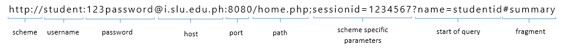
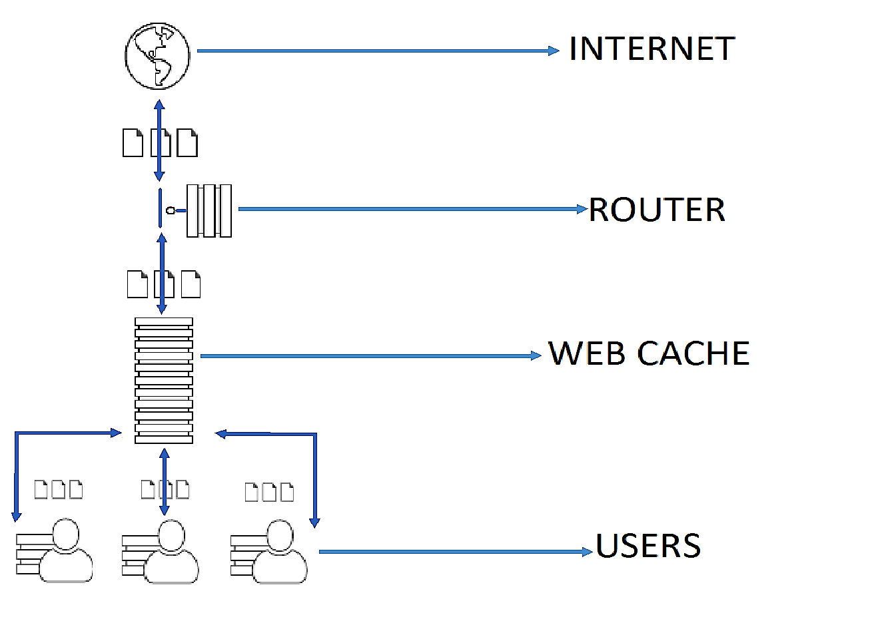

HYPERTEXT TRANSFER PROTOCOL (HTTP)
- Application layer used primarily to retrieve hypertext (on hypermedia) documents and resources on the World Wide Web
- Jointly developed by the W3C and the IETF
Protocol - Set of rules needs to be followed
HTTP 1.1 requires atleast the HOST request
FUNDAMENTALS

- HTTP typically runs on the top of TCP/IP, using TCP port 80 by default (TCP port 443 for HTTPS)
- HTTP resources are identified using URIs (specifically in HTTP URLs)
- HTTP is based on client-server achitecture
- Clients are also known as User Agent (UA):
-
Web browsers, Web crawlers, e-mail clients, and other end user tools and applications
- Servers:
-
origin servers, proxy servers, getaways, tunnels
- HTTP uses a request-response standard protocol
-
The client sends an HTTP request message to the server
The server processes the request and replies with an HTTP response message
- HTTP is a stateless communications protocol
-
Servers do not keep informatin about clients in between requests
Web applications effect session tracking using mechanism such as cookies on URL-encoded session information to keep track of related client requests
- HTTP provides suport for other functionalities such as cahe control, content media type (MIME) specification, language and character set specification,
content/transfer coding, client-server protocol negotiatons, persistent connections, request pipelining, etc.
COOKIE
HTTP Cookie which is also called web cookie, Internet cookie, browser cookie or simply cookie is small piece of data sent from a website and stored on the user's computer by the user's web browser while user is browsing.
CACHE
HTTP Cache is an information technology for the temporary local storage or copy of resource that is fetched from a server.

HTTP REQUEST METHODS
- GET
-
The GET method is commonly used in HTTP method, It is used to request from the server the retrieval if the source identified by the request URI and can be combine with conditional and/or range request headers to effect conditional and/or partial resource retrieval.
- HEAD
-
The HEAD Method is identical to GET method, Method will asks for a response but without the response body. This is very useful for retrieving.
- POST
-
The POST method requests that the origin server accept the entity enclosed in the request as a new subordinate of the resource identified by the Request-URI in the Request-Line.
- PUT
-
The PUT method requests that the enclosed entity in the message body under the specified request URI.
- TRACE
-
The TRACE method requests the server to "echo" back to the client of received request and typically used for testing or diagnostics of the request chain.
- DELETE
-
The DELETE method requests the server to delete the resource identified by the Request-URI.
- CONNECT
-
The CONNECT method is reserved for used of tunneling proxy servers and converts the request connection to a transparent TCP/IP tunnel.
- OPTIONS
-
The OPTIONS method returns the HTTP methods what a server can do. It can be used to check the functionality of a web server by requesting.
HTTP REQUEST-RESPONSE HEADER
- Request Header
-
Message Header
Empty Line (CLF)
Message Body
- Response Header
-
Status Line (CLF)
- HTTP Protocol Version
- Status Code
- REason Phase
Message Headers
Empty Line
Message Body (optional)
HTTP MESSAGE HEADERS
- General Header Fields
-
Cache-control
Connection
Date
Pragma
Trailer
Transfer-encoding
upgrade
Via
Warning
- Request Header Fields
-
Accept
Accept-charset
Accept-encoding
Accept-language
Authorization
Expect
From
Host
If-Match
If-Modified-Since
If-Unmodified-Since
If-None-Match
Range
If-Range
Max-forward
Proxy-Authorization
Referer
User-Agent
- Response Header Fields
-
Accept-Range
Age
E-tag
Location
Proxy-Authenticate
Retry-After
Server
Vary
WWW-Authenticate
- Entity Header Fields
-
Allow
Content-encoding
Content-Languge
Content-length
Content-location
Content-MD5
Content-type
Content-range
Expires
Last-modified
HTTP STATUS CODES
-
- Informational (1xx)
- indicates an interim response for communicating connection status or request progress prior to completing the requested action and sending a final response.
- 100 Continue
- request has been received and has not yet been rejected by the server.
- 101 Switching Protocols
- server understands and is willing to comply with the client's request, via the Upgrade header field for a change in the application protocol being used on this connection.
-
- Success (2xx)
- indicates that the client's request was successfully received, understood, and accepted.
- 200 Ok
- request has succeeded.
- 201 Created
- request has been fulfilled and has resulted in one or more new resources being created.
- 202 Accepted
- the request has been accepted for processing, but the processing has not been completed.
- 203 Non-Authoritative Information
- the request was successful but the enclosed payload has been modified from that of the origin server's 200 (OK) response by a transforming proxy.
- 204 No Content
- the server has successfully fulfilled the request and that there is no additional content to send in the response payload body.
- 205 Reset Content
- user agent reset the "document view".
- 206 Partial Content
- partial content - the server has fulfilled the partial GET request for the resource.
-
- Redirection (3xx)
- indicates that further action needs to be taken by the user agent in order to fulfill the request.
- 300 Multiple Choices
- the target resource has more than one representation, each with its own more specific identifier, user can select a preferred representation.
- 301 Moved Permanently
- the target resource has been assigned a new permanent URI.
- 302 Found
- the target resource resides temporarily under a different URI.
- 303 See Other
- the server is redirecting the user agent to a different resource.
- 304 Not Modified
- the client has performed a conditional GET request and access is allowed, but the document has not been modified.
- 305 Use Proxy
- The requested resource must be accessed through the proxy given by the Location field.
- 307 Temporary Redirect
- the target resource resides temporarily under a different URI and performs an automatic redirection to that URI.
-
- Client Error (4xx)
- indicates that the client made a mistake which resulted to an error
- 400 Bad Request
- the server cannot process the request due to a client error
- 401 Unauthorized
- the request is not accepted because it is not authenticated
- 402 Payment Required
- reserved for future use
- 403 Forbidden
- indicates that the server understood the request but refuses to authorize it
- 404 Not Found
- the origin server could not find a current representation for the target resource
- 405 Method Not Allowed
- indicates that the method received in the request-line is recognized by the server but not supported by the target resource
- 406 Not Acceptable
- the target resource is unwilling to supply a representation of the resource because it is not in accordance with the negotiation header
fields received in the request
- 407 Proxy Authentication Required
- similar to 401 but it indicates that the client needs to authenticate itself in order to use a proxy
- 408 Request Time-out
- the server did not receive a complete request message within the time that it was prepared to wait
- 409 Conflict
- the request could not be completed because of a conflict with the target resource
- 410 Gone
- the target resource is no longer available at the server
- 411 Length Required
- the server refuses to accept the request without the Content-Length header field
- 412 Precondition Failed
- one or more conditions given in the request header fields resulted to false
- 413 Request Entity Too Large
- the server is refusing to process the request because it is larger than what the server can process
- 414 Request-URI Too Long
- the server is refusing the request because the target URI is longer than the server can interpret
- 415 Unsupported Media Type
- the server is refusing to serve the request because it is not in a format that is supported on the target resource
- 416 Request Range Not Satisfiable
- the ranges specified in the Range header field is invalid
- 417 Expectation Failed
- the expectation given in the Expect header field could not be met by the servers
-
- Server Error (5xx)
- the server is aware of the error it caused or is unable of serving the request
- 500 Internal Server Error
- the server encountered a problem that prevented it from serving the request
- 501 Not Implemented
- the server does not recognize the request method and could not give it any resource
- 502 Bad Gateway
- the gateway or proxy received an invalid response from the server it accessed while trying to serve the request
- 503 Service Unavailable
- indicates that the server is currently unavailable because of an overload or ongoing maintenance which will likely be gone after some time
- 504 Gateway Time-out
- the gateway or proxy did not receive a response needed from the server within the time given to complete the request
- 505 HTTP Version Not Supported
- the server does not support the version of the HTTP that was used in the request message